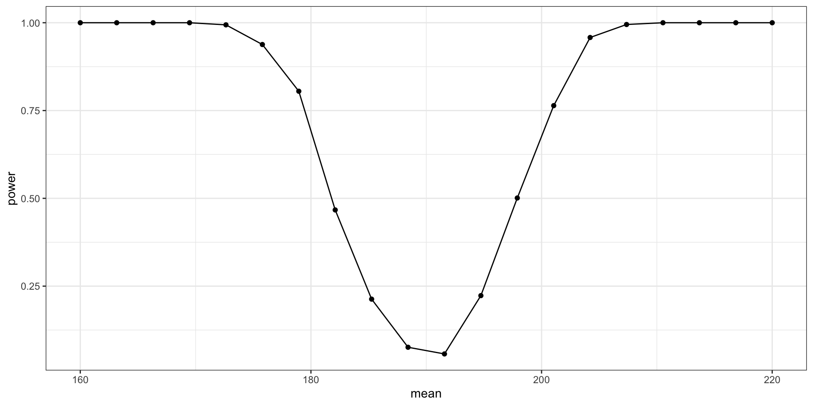

2023-05-09
Today’s session is on data simulation with a focus on using it to perform power and sensitivity analyses:
Understanding univariate random variables and how to generate simulated data from a univariate distribution.
Understanding multivariate random variables and to generate simulated data from a multivariate distribution.
How to use the data grid in combination with set parameters and a linear model to simulate predictors and outcomes.
How to iterate the data simulation and model fitting process to obtain a power analysis for one or many effects.
How to alter your workflow to perform a sensitivity analysis where an a-priori power analysis wasn’t possible.
How to extend data generation to a multilevel modelling framework.
Click Code > Download ZIP.
Unzip the files.
Open the file ds-psych_course.RProj
Create a Quarto document and save it within 08_data-simulation-and-power. Name it anything you like.
You can copy the code form here on out and everything should work.
Power analyses help you to conduct a study such that you’re likely to detect effects if present in the population.
There are a number of power analysis apps that are written for specific data structures and/or models. However, these are often inflexible.
What if you want to power for multiple effects simultaneously? Or allow for missing data in your data generation process? Writing your own data generation process and simulation code allows you to power for any design/model you like.
Load our essential packages, tidyverse for data wrangling and presentation and here for working with file paths. The core packages today are lme4 for mixed effects models and afex which builds on lme4 but adds more functionality.
p, d, q, or r prefixed.d_() functions to understand the probability density (or mass) functions and the r_() functions to generate random data from a distribution.Generate random data from a normal distribution with these parameters:
Check the means and SDs align:
Sample again but increase the sample size, n.
Check the means and SDs align:
The law of large numbers: small samples from random variables have volatile estimates. Large samples converge on stable estimates.
There are many more distributions in base-R stats and in extraDistr.
Do it again…
Let’s do a one-sample t-test to see if our data is significantly different to \(\mu\) = 190.
In R we have two options for iteration:
purrr, part of the tidyverse. We’ll look at this in a moment.Starting with a loop:
We didn’t quite hit a target of 90% power. How can we improve on this?
Let’s explore a range of sample sizes. First, let’s start making things a bit more easier to work with.
If you want to repeat a process several times over, we need to adhere to DRY principle. We also might want to break tasks into chunks to make things easier to manage. Functions help with both.
Notice we can pass parameters to the function, like the sample size here.
[1] 202.12290 156.77759 148.68703 156.92794 172.35414 224.39772 223.26367
[8] 222.46831 170.63125 220.67973 241.02525 235.98565 227.35576 303.93885
[15] 211.32863 230.89383 205.54988 218.71417 183.25334 222.22325 250.45077
[22] 244.33467 128.42386 261.99214 215.91468 212.49719 96.21624 212.80300
[29] 185.69115 248.90266 192.64676 136.67635 220.05116 153.79877 316.18656
[36] 256.51805 197.13738 97.12939 185.96775 216.97158 197.77605 143.18373
[43] 235.36764 197.46067 170.71935 191.07925 147.61687 253.14869 199.25710
[50] 231.19388 228.02083 253.16038 258.29213 214.26326 234.01436 250.54757
[57] 152.93374 188.93594 227.44140 165.01162 183.22344 201.89796 183.92737
[64] 242.62067 170.91797 215.41897 169.76287 131.40693 209.60688 233.96526
[71] 177.78527 260.17163 216.39401 226.96306 198.27265 209.84496 117.22578
[78] 275.49311 230.54800 139.94167 167.16366 221.48241 253.97960 239.83908
[85] 206.54903 297.58160 199.50894 189.75836 202.11724 141.09153 199.88605
[92] 226.05499 174.06471 152.60516 231.66715 176.16737 212.62571 174.54513
[99] 159.24757 226.81748If we want to have a function called within a function, we either have to make sure the top-level function can have all arguments in the bottom-level function, like so:
Or, we can instead pass elipses (...) which means any arguments we pass to the top-level function are passed to the bottom-level function. If we don’t pass any arguments, the defaults are used.
With this structure we can vary the parameters in the top-level function, sim_fit() and it’s passed to the bottom-level function, sim_data().
# A tibble: 1 × 8
estimate statistic p.value parameter conf.low conf.high method alternative
<dbl> <dbl> <dbl> <dbl> <dbl> <dbl> <chr> <chr>
1 195. 0.808 0.440 9 181. 210. One Sampl… two.sided We want to run 1000 simulations of data, fit the model to the data, then save the output.
Using purrr::pmap() executes your function, passing any parameters from the first argument to the function. It runs for however many rows you have in the parameters.
purr::map() Family of Functions.parameters <- tibble(
n = rep(100, 1000)
)
simulations <- purrr::pmap_df(parameters, sim_fit)
simulations# A tibble: 1,000 × 8
estimate statistic p.value parameter conf.low conf.high method alternative
<dbl> <dbl> <dbl> <dbl> <dbl> <dbl> <chr> <chr>
1 201. 2.60 0.0108 99 193. 209. One Sam… two.sided
2 199. 2.20 0.0305 99 191. 208. One Sam… two.sided
3 196. 1.53 0.130 99 188. 204. One Sam… two.sided
4 203. 3.23 0.00170 99 195. 211. One Sam… two.sided
5 203. 3.13 0.00230 99 195. 212. One Sam… two.sided
6 199. 2.11 0.0372 99 191. 208. One Sam… two.sided
7 203. 3.38 0.00103 99 195. 210. One Sam… two.sided
8 205. 3.63 0.000457 99 197. 213. One Sam… two.sided
9 194. 1.07 0.286 99 186. 202. One Sam… two.sided
10 200. 2.31 0.0232 99 191. 208. One Sam… two.sided
# ℹ 990 more rowsBefore we iterate the process across several sample sizes, we must capture the sample size in our model output. Let’s alter the sim_fit() function slightly to do so.
crossing() gives you all combinations of the supplied vectors.Here, we remove the iterations column once we’ve created the tibble as this can’t be passed to our function as an argument.
Simulate data and fit a model 1000 times for each sample size.
What’s the power look like for each sample size? 160 looks pretty good.
sim_power <- simulations |>
group_by(n) |>
summarise(power = mean(p.value < .05))
sim_plot <- ggplot(sim_power, aes(x = n, y = power)) +
geom_smooth(se = FALSE, method = "loess", formula = "y ~ x", colour = "#ffa07a") +
geom_point() +
scale_y_continuous(breaks = seq(0, 1, by = .1)) +
coord_cartesian(ylim = c(0, 1)) +
theme_bw()What if we’ve already conducted our study? Post-hoc power analysis is always a bad idea, but sensitivity analysis can tell you which effects your study was sensitive to detect with given probabilities.
We just need to make the sim_data() function allow for different means to be passed to the data generation process.
Update the parameters to now vary the mean effect size. Remember we have a default n of 100.
# A tibble: 20,000 × 9
estimate statistic p.value parameter conf.low conf.high method alternative
<dbl> <dbl> <dbl> <dbl> <dbl> <dbl> <chr> <chr>
1 163. -6.66 1.56e- 9 99 155. 171. One Sam… two.sided
2 164. -7.41 4.38e-11 99 157. 171. One Sam… two.sided
3 164. -6.63 1.82e- 9 99 156. 172. One Sam… two.sided
4 166. -6.07 2.38e- 8 99 158. 174. One Sam… two.sided
5 172. -4.67 9.54e- 6 99 164. 180. One Sam… two.sided
6 176. -3.46 8.01e- 4 99 167. 184. One Sam… two.sided
7 179. -2.62 1.02e- 2 99 171. 187. One Sam… two.sided
8 176. -3.50 6.94e- 4 99 169. 184. One Sam… two.sided
9 185. -1.16 2.50e- 1 99 177. 194. One Sam… two.sided
10 192. 0.506 6.14e- 1 99 184. 200. One Sam… two.sided
# ℹ 19,990 more rows
# ℹ 1 more variable: mean <dbl>sensitivity_result <- simulations |>
group_by(mean) |>
summarise(power = mean(p.value < .05))
sensitivity_result# A tibble: 20 × 2
mean power
<dbl> <dbl>
1 160 1
2 163. 1
3 166. 1
4 169. 1
5 173. 0.994
6 176. 0.938
7 179. 0.805
8 182. 0.467
9 185. 0.213
10 188. 0.076
11 192. 0.057
12 195. 0.223
13 198. 0.501
14 201. 0.764
15 204. 0.958
16 207. 0.995
17 211. 1
18 214. 1
19 217. 1
20 220 1 Remember, this is for a one-sample t-test where \(\mu\) = 190. Our test isn’t sensitive to values ranging from around 180-200.
Often we want to simulate data that are correlated with one another. Understanding the maths behind this will make it easier to do so.
The variance of a random variable measures the spread of the values of the variable. For a bivariate normal distribution with variables X and Y this is denotes as \(\sigma_x\) and \(\sigma_y\) which describes the variance for each variable.
The covariance between two random variables measures how much the variables vary together. In the case of a bivariate normal distribution between variables X and Y this is denoated at \(Cov(X, Y)\).
Measures how much the values of X and Y deviate from their means in the same direction.
If positive: The variables tend to move in the same direction.
If negative: The variables tend to move in opposite directions.
The correlation between two random variables measures the strength and direction of the linear relationship between them. In the case of a bivariate normal distribution, the correlation between variables X and Y is denoted as \(\rho\)
\(\rho = \frac{Cov(X, Y)}{\sigma_x\sigma_y}\)
The variance-covariance matrix (also known as the covariance matrix) is a square matrix that contains the variances (SD squared; \(\sigma^2\)) of the individual variables along the diagonal and the covariances between each pair of variables off the diagonal. For the bivariate case this is:
\(\Sigma = \begin{pmatrix} \sigma_x^2, \rho\sigma_x\sigma_y \\ \rho\sigma_x\sigma_y, \sigma_y^2 \end{pmatrix}\)
If X and Y are two normal random variables the joint distribution between X and Y is defined as:
\(\begin{bmatrix}X_i \\ Y_i \end{bmatrix} \sim \mathcal{N} \begin{pmatrix}\begin{bmatrix} \mu_x \\ \mu_y\end{bmatrix},\Sigma\end{pmatrix}\)
For multivariate data, such as the bivariate case, we can simulate data using the multivariate version of the distribution. For rnorm() this is MASS:mvrnorm().
We can improve readability by making a covariance object.
Pass the sample size, means, and variance-covariance matrix to the multivariate version of the rnorm() function from the MASS package.
Check the means and SDs. Looks good!
We can generate data using the linear regression framework. This is useful if you want to simulate an outcome from some known predictors.
Call:
lm(formula = y ~ x, data = samples_df)
Residuals:
Min 1Q Median 3Q Max
-143.923 -29.456 1.863 31.039 115.893
Coefficients:
Estimate Std. Error t value Pr(>|t|)
(Intercept) 36.00592 5.54131 6.498 6.46e-10 ***
x 0.89541 0.09463 9.463 < 2e-16 ***
---
Signif. codes: 0 '***' 0.001 '**' 0.01 '*' 0.05 '.' 0.1 ' ' 1
Residual standard error: 45.97 on 198 degrees of freedom
Multiple R-squared: 0.3114, Adjusted R-squared: 0.3079
F-statistic: 89.54 on 1 and 198 DF, p-value: < 2.2e-16Outcomes come from a fixed intercept, a fixed slope, a predictor, and some normally distributed error.
\[ \begin{aligned} Y_i = \alpha + \beta X_i + \epsilon_i \\ \epsilon_i \sim \mathcal{N}(0, \sigma) \end{aligned} \]
What if we had a good idea of the linear model parameters? Simulate using the linear model.
n <- 200 # observations
alpha <- 34.40 # intercept
beta <- 0.79 # slope
sigma <- 45.97 # residual SD
# simulate predictor
x <- rnorm(n, x_mean, x_sd) # mean = 50, sd = 35
# simulate outcome
err <- rnorm(n, 0, sd = sigma)
y <- alpha + beta*x + err
# alternatively:
# y <- rnorm(n, mean = alpha + beta*x, sd = sigma)Looks very close to the same parameters we got from the bivariate data.
Call:
lm(formula = y ~ x, data = sim_data)
Residuals:
Min 1Q Median 3Q Max
-116.680 -29.656 1.607 31.013 98.749
Coefficients:
Estimate Std. Error t value Pr(>|t|)
(Intercept) 27.743 5.320 5.215 4.61e-07 ***
x 0.853 0.092 9.272 < 2e-16 ***
---
Signif. codes: 0 '***' 0.001 '**' 0.01 '*' 0.05 '.' 0.1 ' ' 1
Residual standard error: 44.6 on 198 degrees of freedom
Multiple R-squared: 0.3027, Adjusted R-squared: 0.2992
F-statistic: 85.96 on 1 and 198 DF, p-value: < 2.2e-16Outcomes come from a fixed intercept, a fixed slope for one predictor, a fixed slope for another predictor, and some normally distributed error.
\[ \begin{aligned} Y_i = \alpha + \beta_1 X_{1i} + \beta_2 X_{2i} + \epsilon_i \\ \epsilon_i \sim \mathcal{N}(0, \sigma) \end{aligned} \]
Notice we now have beta_1 and beta_2 parameters with associated x_1 and x_2 variables.
n <- 200 # observations
alpha <- 34.40 # intercept
beta_1 <- 1.06 # slope for X1
beta_2 <- -2.54 # slope for X2
sigma <- 45.97 # residual SD
x_1_mean <- 50
x_2_mean <- 20
x_1_sd <- 20
x_2_sd <- 35
corr <- .3
covariance <- x_1_sd * x_2_sd * corr
varcorr <- matrix(
c(x_1_sd^2, covariance, covariance, x_2_sd^2),
ncol = 2
)
# simulate predictors
predictors <- MASS::mvrnorm(
n = n,
mu = c(x_1 = x_1_mean, x_2 = x_2_mean),
Sigma = varcorr
) |>
as_tibble()
x_1 <- predictors$x_1
x_2 <- predictors$x_2
# simulate outcome
err <- rnorm(n, 0, sd = sigma)
y <- alpha + beta_1*x_1 + beta_2*x_2 + err
# alternatively:
# y <- rnorm(n, mean = alpha + beta_1*x_1 + beta_2*x_2, sd = sigma)Looks good!
Call:
lm(formula = y ~ x_1 + x_2, data = sim_data)
Residuals:
Min 1Q Median 3Q Max
-145.353 -31.899 4.338 29.553 123.397
Coefficients:
Estimate Std. Error t value Pr(>|t|)
(Intercept) 33.41219 8.96790 3.726 0.000254 ***
x_1 0.92497 0.17578 5.262 3.7e-07 ***
x_2 -2.26334 0.09911 -22.836 < 2e-16 ***
---
Signif. codes: 0 '***' 0.001 '**' 0.01 '*' 0.05 '.' 0.1 ' ' 1
Residual standard error: 46.36 on 197 degrees of freedom
Multiple R-squared: 0.7301, Adjusted R-squared: 0.7273
F-statistic: 266.4 on 2 and 197 DF, p-value: < 2.2e-16Remember categorical predictors are defined by contrasts, so we assign values to conditions, e.g. -1/1.
n <- 200 # observations
alpha <- 34.40 # intercept
beta <- 20 # slope
sigma <- 45.97 # residual SD
# simulate predictor
x <- c(rep(-1, times = n/2), rep(1, times = n/2))
# simulate outcome
err <- rnorm(n, 0, sd = sigma)
y <- alpha + beta*x + err
# alternatively:
# y <- rnorm(n, mean = alpha + beta*x, sd = sigma)Looks good!
Call:
lm(formula = y ~ x, data = sim_data)
Residuals:
Min 1Q Median 3Q Max
-108.165 -27.199 -0.793 27.709 131.590
Coefficients:
Estimate Std. Error t value Pr(>|t|)
(Intercept) 32.320 3.126 10.338 < 2e-16 ***
x 12.581 3.126 4.024 8.14e-05 ***
---
Signif. codes: 0 '***' 0.001 '**' 0.01 '*' 0.05 '.' 0.1 ' ' 1
Residual standard error: 44.21 on 198 degrees of freedom
Multiple R-squared: 0.0756, Adjusted R-squared: 0.07093
F-statistic: 16.19 on 1 and 198 DF, p-value: 8.139e-05Mixed effects models are just extensions of the linear model. Let’s simulate data with crossed random effects of subjects and items.
We’ll use the language learning data from Williams et al. (2020). Notice we will drop some factors and levels to make it easier so we have a 2 \(\times\) 2 study within one within-subjects but between-items factor, dialect_words, and one within-items but between-subjects factor, language_variety.
levenik_data <- read_csv(
"https://raw.githubusercontent.com/gpwilliams/levenik/master/02_data/03_study-three/03_cleaned-data/ex_3_cleaned_data.csv"
) |>
# keep only testing block for reading, excluding people who didn't complete it
filter(
block == "TEST",
task == "R",
!participant_number %in% c(144, 177, 273),
dialect_words %in% c("no_shift_word", "shifted_word")
) |>
rename(item = target) |>
dplyr::select(
participant_number,
item,
language_variety,
lenient_nLED
) |>
mutate(
participant_number = as.factor(participant_number),
item = as.factor(item),
language_variety = as.factor(language_variety),
asin_lenient_nLED = asin(sqrt(lenient_nLED))
)Outcomes come from a fixed intercept with offsets (random intercepts) for subjects and items, a fixed slope for language variety with offsets by items (random slope), and some normally distributed error.
\[ \begin{aligned} Y_{si} = \beta_0 +\tau_{0s} + \omega_{0i} + (\beta_1 + \omega_{1i})X_{i} + \epsilon_{si} \\ \epsilon_{si} \sim \mathcal{N}(0, \sigma) \end{aligned} \]
mod <- afex::mixed(
asin_lenient_nLED ~ language_variety +
(1 | participant_number) + (1 + language_variety | item),
data = levenik_data
)
summary(mod)Linear mixed model fit by REML. t-tests use Satterthwaite's method [
lmerModLmerTest]
Formula: asin_lenient_nLED ~ language_variety + (1 | participant_number) +
(1 + language_variety | item)
Data: data
REML criterion at convergence: 3776.4
Scaled residuals:
Min 1Q Median 3Q Max
-4.5528 -0.6308 -0.1156 0.6531 4.2782
Random effects:
Groups Name Variance Std.Dev. Corr
participant_number (Intercept) 0.1107117 0.33273
item (Intercept) 0.0095846 0.09790
language_variety1 0.0001447 0.01203 0.40
Residual 0.1110378 0.33322
Number of obs: 4883, groups: participant_number, 163; item, 30
Fixed effects:
Estimate Std. Error df t value Pr(>|t|)
(Intercept) 0.47183 0.03196 146.98613 14.763 <2e-16 ***
language_variety1 -0.04205 0.02659 161.83618 -1.582 0.116
---
Signif. codes: 0 '***' 0.001 '**' 0.01 '*' 0.05 '.' 0.1 ' ' 1
Correlation of Fixed Effects:
(Intr)
langg_vrty1 0.024 # sample sizes ----
n_subj <- 162
n_standard_subj <- n_subj/2
n_dialect_subj <- n_subj/2
n_items <- 30
# fixed effects ----
beta_0 <- 0.47 # intercept
beta_1 <- -0.04 # slope
# random effects ----
tau_0 <- 0.33 # by-subject SD for intercept
omega_0 <- 0.09 # by-item SD for intercept
omega_1 <- 0.012 # by-item SD for slope
rho <- .40 # correlation between by-item intercept and slope SD
# residual standard deviation ----
sigma <- 0.33By-participant random intercepts are normally distributed [rnorm()] around the fixed effect intercept.
subjects <- tibble(
subject_id = paste0("S", 1:n_subj),
language_variety = rep(c("standard", "dialect"), c(n_standard_subj, n_dialect_subj)),
T_0s = rnorm(n = n_subj, mean = 0, sd = tau_0)
) |>
mutate(language_variety_num = case_when(
language_variety == "standard" ~ -1,
language_variety == "dialect" ~ 1
)) |>
dplyr::select(subject_id, language_variety, language_variety_num, everything())By-items random intercepts and slopes are multivariate normally distributed [mvrnorm()] around the fixed effect estimates with our given correlation (rho).
covariance <- rho * omega_0 * omega_1
vcov_matrix <- matrix(
c(omega_0^2, covariance, covariance, omega_1^2),
nrow = 2
)
item_ranefs <- MASS::mvrnorm(
n = n_items,
mu = c(O_0i = 0, O_1i = 0),
Sigma = vcov_matrix
)
items <- tibble(
item_id = paste0("I", 1:n_items),
O_0i = item_ranefs[,1],
O_1i = item_ranefs[,2]
)trials <- crossing(subjects, items)
trials <- trials |>
mutate(
e_si = rnorm(nrow(trials), mean = 0, sd = sigma)
) |>
dplyr::select(subject_id, item_id, language_variety, everything())
# inspect it
head(trials)# A tibble: 6 × 8
subject_id item_id language_variety language_variety_num T_0s O_0i
<chr> <chr> <chr> <dbl> <dbl> <dbl>
1 S1 I1 standard -1 -0.278 0.0286
2 S1 I10 standard -1 -0.278 -0.186
3 S1 I11 standard -1 -0.278 -0.0897
4 S1 I12 standard -1 -0.278 -0.0151
5 S1 I13 standard -1 -0.278 -0.131
6 S1 I14 standard -1 -0.278 0.0818
# ℹ 2 more variables: O_1i <dbl>, e_si <dbl>sim_data <- trials |>
mutate(
asin_lenient_nLED = beta_0 + T_0s + O_0i + (beta_1 + O_1i) * language_variety_num + e_si,
language_variety = as.factor(language_variety)
) |>
dplyr::select(subject_id, item_id, language_variety, asin_lenient_nLED)
# set contrast codes: be careful they match up!
contrasts(sim_data$language_variety) <- contr.sum(2)
head(sim_data)# A tibble: 6 × 4
subject_id item_id language_variety asin_lenient_nLED
<chr> <chr> <fct> <dbl>
1 S1 I1 standard -0.115
2 S1 I10 standard -0.0272
3 S1 I11 standard 0.0198
4 S1 I12 standard 0.170
5 S1 I13 standard 0.263
6 S1 I14 standard 0.0932Looks close to our original estimates!
sim_mod <- afex::mixed(
asin_lenient_nLED ~ language_variety +
(1 | subject_id) + (1 + language_variety | item_id),
data = sim_data
)
summary(sim_mod)Linear mixed model fit by REML. t-tests use Satterthwaite's method [
lmerModLmerTest]
Formula: asin_lenient_nLED ~ language_variety + (1 | subject_id) + (1 +
language_variety | item_id)
Data: data
REML criterion at convergence: 3575.8
Scaled residuals:
Min 1Q Median 3Q Max
-3.0873 -0.6642 -0.0076 0.6661 3.5997
Random effects:
Groups Name Variance Std.Dev. Corr
subject_id (Intercept) 0.1071665 0.32736
item_id (Intercept) 0.0087972 0.09379
language_variety1 0.0001886 0.01373 0.52
Residual 0.1069348 0.32701
Number of obs: 4860, groups: subject_id, 162; item_id, 30
Fixed effects:
Estimate Std. Error df t value Pr(>|t|)
(Intercept) 0.44774 0.03125 150.30570 14.326 <2e-16 ***
language_variety1 -0.04238 0.02626 161.41417 -1.614 0.109
---
Signif. codes: 0 '***' 0.001 '**' 0.01 '*' 0.05 '.' 0.1 ' ' 1
Correlation of Fixed Effects:
(Intr)
langg_vrty1 0.027 Please complete the exercises at https://github.com/gpwilliams/ds-psych_course.